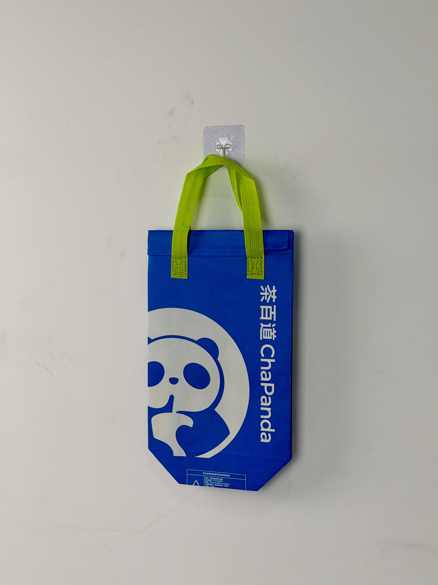

A vibrant blue thermal carrier for ChaPanda, featuring the iconic panda brand mascot and bold vertical typography that turns every delivery into a panda sighting.

ChaPanda (茶百道) is one of China's largest and fastest-growing fresh-tea chains, with over 7,000 locations globally. The brand's name cleverly combines "tea" (茶) with "hundred" (百) and "path" (道) — suggesting a tea journey with infinite possibilities. The iconic panda mascot has become one of the most recognizable brand marks in China's beverage industry, leveraging the universal appeal of China's national animal while creating instant emotional connection with consumers of all ages.
Our panda isn't just a mascot — it's a friend that shows up at your door with a drink. The bag needs to make customers smile before they even open it.
The thermal bag project was initiated as part of ChaPanda's global brand-standardization program. With thousands of daily deliveries across multiple countries, the bag needed to function as a universal brand ambassador — communicating the same friendly personality in Chengdu, Bangkok, or Melbourne.
The design strategy maximizes the panda mascot's visual impact through scale and placement. The oversized panda face dominates the bag's lower half, creating instant recognition even from a distance. The vertical bilingual typography runs along the right edge, ensuring brand readability when the bag is carried at the side. The electric blue field with lime-green handles creates a color combination so distinctive that customers can identify a ChaPanda delivery before reading any text.
Large-scale panda face creates instant emotional connection and brand recognition from any angle.
"茶百道 ChaPanda" reads naturally when bag is carried, maximizing brand exposure during transport.
High-saturation blue creates instant visual pop in any environment — streets, offices, or social-media feeds.
Neon-green handles add energy and secondary brand color presence to the most visible bag element.
ChaPanda's massive global scale requires packaging that maintains consistent quality across millions of units and diverse climate zones. The specification prioritizes color accuracy, print consistency, and thermal performance for year-round deployment.
| Parameter | Specification | Test Standard |
|---|---|---|
| Temperature Retention | Hot > 55°C / Cold < 12°C for 40 min | Internal Protocol |
| Load Capacity | 3 kg | ASTM D5265 |
| Color Accuracy | Delta E < 1.5 vs. brand guide | ISO 12647 |
| Seam Strength | > 22 N/cm | ASTM D1683 |
ChaPanda's global scale requires production capacity that can deliver consistent quality across millions of units. The five-stage workflow was designed for high-volume efficiency without compromising the panda mascot's friendly expression.
100gsm non-woven PP with ChaPanda electric-blue masterbatch. Color verified every 2,000 meters against archived standard.
White plastisol for panda mascot and bilingual typography. Registration within ±0.5mm for brand clarity.
15-micron matte BOPP for clean, modern surface finish. Reduces glare and enhances readability.
3mm EPE foam laminated to aluminum-PE barrier. Heat-compression at 3.5kg/cm for uniform insulation.
Ultrasonic die-cutting with sealed edges. Lime-green handles attached. Batch sampling every 2,000 units.
The thermal bag was deployed across ChaPanda's entire global network of 7,000+ stores, replacing regional packaging variations with a unified international brand standard. Rollout timing coincided with the brand's expansion into Southeast Asian markets.
Key Insight: In overseas markets where ChaPanda was less established, the panda mascot on the bag functioned as an instant cultural ambassador. International customers who didn't recognize the brand name immediately identified the panda as Chinese and associated it with quality tea — overcoming the "unknown foreign brand" barrier that new market entrants typically face.
The vertical typography proved particularly effective for brand exposure. When carried at the side, the vertical "茶百道 ChaPanda" text reads naturally to passersby — maximizing visibility in walking and transit environments where horizontal text would be obscured.
Three design decisions differentiate this tea-chain delivery bag from standard beverage packaging. Each leverages the universal appeal of the panda mascot and strategic color psychology.
The giant panda is China's most recognized cultural symbol globally. By making the panda the dominant visual element, ChaPanda creates instant positive associations even in markets where the brand name is unknown. The mascot functions as a friendly face that disarms skepticism and invites trust.
The electric blue and lime-green combination is psychologically associated with freshness, energy, and youth. Unlike competitors who rely on warm tones that suggest indulgence, ChaPanda's cool palette signals refreshment and vitality — aligning with health-conscious consumers who want tea without guilt.
Most bags feature horizontal text that becomes unreadable when the bag hangs at the side. ChaPanda's vertical orientation ensures that the brand name remains legible during natural carrying posture — a subtle but critical design decision that maximizes real-world brand impressions.
We manufacture high-volume thermal delivery bags for beverage chains expanding internationally. From mascot-centric design to global color-standard consistency, we deliver packaging that travels with your brand.